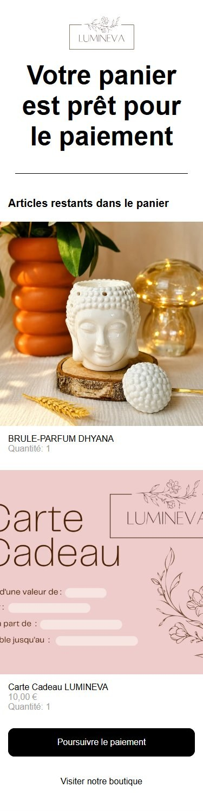

1 · Nos quatre questions
| Question posée aux données | Réponse | Automatisation recommandée |
|---|---|---|
| 1 · Faut-il une relance après la 1re commande, et quand l’envoyer ? | Oui, selon le profil : 8,4 % de retour par mois jusqu’à J+45 pour un nouveau client, puis 4,7 % ; 25 % à J+60 pour un régulier | Relance selon le profil |
| 2 · Que rapportent les relances panier et paiement ? | Oui : 0,97 commande pour 100 e-mails contre 0,11 pour les newsletters, mais un seul mail, un flux cassé et trois anciens flux inutiles | De nouveaux mails de relance (panier, paiement, navigation) et ménage des flux |
| 3 · Comment cibler les bons abonnés avec les codes promo ? | Pas encore : le code de bienvenue est public et ne fait pas revenir (p = 0,60), 650 abonnés n’ont aucune étiquette et le seul formulaire du site est celui de la formation | Un formulaire d’inscription général et des étiquettes automatiques, pour cibler ensuite |
| 4 · Faut-il prévenir les clients d’un lancement ou d’un retour en stock ? | Non : 4 commandes pour 7 216 e-mails de lancement ou de retour, et les pointes suivent Instagram et Facebook | Pas d’e-mail de lancement, un test « prévenez-moi » pour mesurer la demande des produits épuisés |
2 · Ce qui existe déjà dans la boutique
3 · Chaque automatisation en un coup d’œil
Récupérer un panier abandonné
Un visiteur quitte la boutique avec un panier (déclencheur Shopify : « Customer left online store without making a purchase »).
Actif · créé : 19 août 2025
- E-mails envoyés271
- Ouverts53 %
- Cliqués10,8 %
- Visiteurs uniques9,6 %
- Commandes1,48 %
Barres : part des e-mails envoyés (100 % = tous). 4 commandes pour 380 € rattachés.
Elle marche : la meilleure des 7, avec 1,48 commande pour 100 e-mails.
Récupérer un paiement abandonné
Un client abandonne au moment de payer (« Customer abandons checkout »).
Actif · créé : 26 sept. à 13:07
- E-mails envoyés451
- Ouverts49 %
- Cliqués9,7 %
- Visiteurs uniques4,7 %
- Commandes0,67 %
Barres : part des e-mails envoyés (100 % = tous). 3 commandes pour 463 € rattachés.
Elle marche : 0,67 commande pour 100 e-mails, mais un panier moyen élevé (149 €).
Convertir les navigations abandonnées
Même déclencheur que le panier : un visiteur part sans acheter. L’e-mail montre le produit regardé.
Actif mais e-mail en brouillon · dernière activité : 19 août 2025
- E-mails envoyés26
- Ouverts77 %
- Cliqués3,8 %
- Visites1
- Commandes0
Barres : part des e-mails envoyés (100 % = tous). Aucune commande rattachée.
À réparer : seulement 26 envois, 0 commande ; Shopify signale « certaines exécutions ont généré des erreurs ».
Bienvenue Newsletter Formation
Un client reçoit l’étiquette « Formation » (« Customer tags added »).
Actif · créé : 15 sept. à 11:23
- E-mails envoyés320
- Ouverts71 %
- Cliqués1,9 %
- Visiteurs uniques0,3 %
- Commandes0,00 %
Barres : part des e-mails envoyés (100 % = tous). Aucune commande rattachée.
Elle accueille bien (71 % d’ouverture) mais ne fait pas vendre : 1,9 % de clic, 0 commande rattachée.
Recover abandoned checkout (1)
Ancien flux Shopify Flow, en anglais, remplacé par les flux ci-dessus.
Inactif · dernière activité : 13 juin 2025
Aucun e-mail envoyé : rien à mesurer.
Inactif : aucun envoi, e-mail en brouillon. À supprimer pour y voir clair.
Recover abandoned checkout (2)
Ancien flux Shopify Flow, en anglais.
Inactif · dernière activité : 13 juin 2025
- E-mails envoyés10
- Ouverts40 %
- Cliqués10,0 %
- Visites0
- Commandes0
Barres : part des e-mails envoyés (100 % = tous). Aucune commande rattachée.
Inactif : 10 envois en juin 2025, 0 commande. À supprimer.
Recover abandoned checkout (3)
Ancien flux Shopify Flow, en anglais.
Inactif · dernière activité : 7 juin 2025
- E-mails envoyés10
- Ouverts40 %
- Cliqués0,0 %
- Visites0
- Commandes0
Barres : part des e-mails envoyés (100 % = tous). Aucune commande rattachée.
Inactif : 10 envois en juin 2025, 0 commande. À supprimer.
4 · Laquelle rapporte le plus ?
- FaitLes deux relances actives (panier et paiement) font 0,97 commande pour 100 e-mails, contre 0,11 pour les newsletters : près de 9 fois plus (p < 0,001).
- FaitLes deux autres automatisations actives ne rapportent rien de visible : la navigation envoie très peu (26 e-mails, brouillon avec erreurs) et la bienvenue formation accueille (71 % d’ouverture) sans vendre.
- FaitLes trois anciens flux « Recover abandoned checkout » ont envoyé 20 e-mails au total, en juin 2025, et aucune commande.
- Interprétation possibleShopify ne compte que les commandes qui suivent un clic dans l’e-mail : le vrai effet est sans doute un peu plus grand, sans qu’on sache de combien.
5 · Ce que reçoit le client

271 envois · 4 commandes

451 envois · 3 commandes

26 envois · 0 commande
6 · Tous les chiffres
| Automatisation | État | Envoyés | Ouverts | Cliqués | Visites | Commandes | CA rattaché |
|---|---|---|---|---|---|---|---|
| Récupérer un panier abandonné | Actif | 271 | 53 % | 10,8 % | 33 | 4 | 380 € |
| Récupérer un paiement abandonné | Actif | 451 | 49 % | 9,7 % | 22 | 3 | 463 € |
| Convertir les navigations abandonnées | Actif, e-mail en brouillon | 26 | 77 % | 3,8 % | 1 | 0 | 0 € |
| Bienvenue Newsletter Formation | Actif | 320 | 71 % | 1,9 % | 1 | 0 | 0 € |
| Recover abandoned checkout (1) | Inactif | 0 | – | – | 0 | 0 | 0 € |
| Recover abandoned checkout (2) | Inactif | 10 | 40 % | 10,0 % | 0 | 0 | 0 € |
| Recover abandoned checkout (3) | Inactif | 10 | 40 % | 0,0 % | 0 | 0 | 0 € |
| Total des 7 | 1 088 | 7 | 842 € |
Limites et ce qui manque
- Chiffres cumulés depuis la création de chaque automatisation ; la date de création de l’automatisation « paiement » n’est pas lisible (« 26 sept. », sans année) : on ne calcule pas de rythme par mois.
- Le taux d’ouverture est approximatif : certaines messageries ouvrent les e-mails automatiquement.
- Très peu de commandes (7) : tout classement entre les deux relances est fragile.
- Le nombre de paniers abandonnés est inconnu : on ne sait pas quelle part les relances récupèrent.